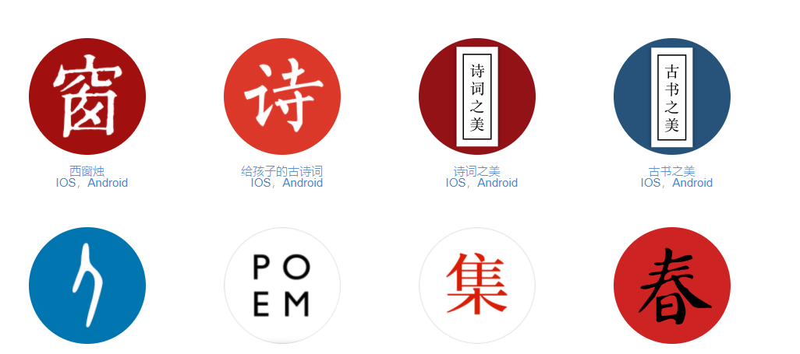

关于我们
西窗文化 成立于 2016 年 6 月。北宋著名理学家张载有言曰：“为天地立心，为生民立命，为往圣继绝学，为万世开太平”。从尧舜开始，华夏文明的长河源远流长，而我们要做的是接续、继承、复兴、发扬祖国的传统文化。上承祖先披荆斩棘之功绩，下开子孙太平盛世之基业。「西窗烛」打开了一扇传统文化的窗，为大家点亮了心中的烛火，愿这烛火以星星之势，燃烧我大中华每一颗拳拳赤子之心，让更多的人认识到古代先贤的智慧与文化的魅力。为往圣继绝学，我们愿成为一扇「窗」，窗的一边是中国优秀传统文化之美，另一边是大家。
